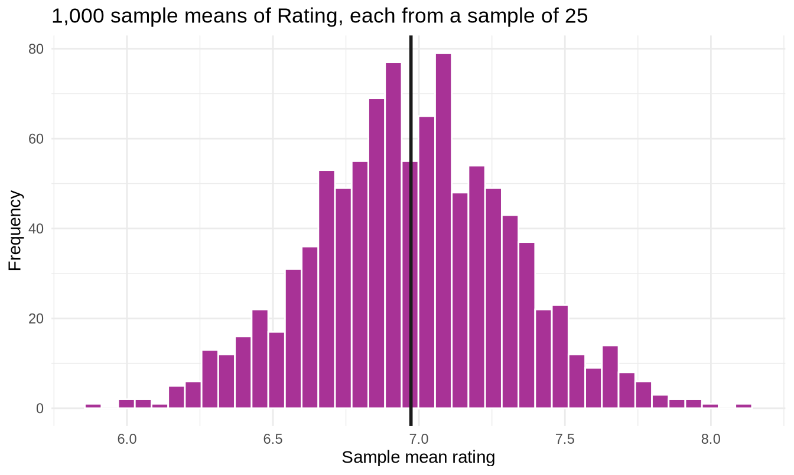

Show the code
library(tidyverse)
library(readxl)
set.seed(2024)
sales <- read_excel("../data/supermarket_sales.xlsx")
true_mean <- mean(sales$Total)
true_sd <- sd(sales$Total)307102 Descriptive Statistics for Business | University of Petra
Every chunk runs. Results involving sample() vary between runs unless a seed is set; quoted figures come from set.seed(2024).
library(tidyverse)
library(readxl)
set.seed(2024)
sales <- read_excel("../data/supermarket_sales.xlsx")
true_mean <- mean(sales$Total)
true_sd <- sd(sales$Total)Covered in the student notebook. The point to land: margin of error scales with 1/sqrt(n), so tenfold more data gives about a 3.16-fold improvement, not tenfold.
Worth putting on the board:
tibble(
n = c(1000, 4000, 10000, 100000),
margin_percent = round(1.96 * sqrt(0.25 / c(1000, 4000, 10000, 100000)) * 100, 2)
)#> # A tibble: 4 × 2
#> n margin_percent
#> <dbl> <dbl>
#> 1 1000 3.1
#> 2 4000 1.55
#> 3 10000 0.98
#> 4 100000 0.31Why this matters commercially. Someone who believes error falls linearly with sample size will approve a survey ten times larger expecting ten times the precision. That is a real budget decision made on a false premise, and it happens often.
sample_means <- replicate(1000, mean(sample(sales$Rating, size = 25)))
tibble(
mean_of_means = round(mean(sample_means), 4),
true_mean = round(mean(sales$Rating), 4),
sd_of_means = round(sd(sample_means), 4),
theoretical_se = round(sd(sales$Rating) / sqrt(25), 4)
)#> # A tibble: 1 × 4
#> mean_of_means true_mean sd_of_means theoretical_se
#> <dbl> <dbl> <dbl> <dbl>
#> 1 6.98 6.97 0.343 0.344tibble(sample_mean = sample_means) |>
ggplot(aes(x = sample_mean)) +
geom_histogram(bins = 40, fill = "#A83296", colour = "white") +
geom_vline(xintercept = mean(sales$Rating), colour = "#1A1A1A", linewidth = 1) +
labs(title = "1,000 sample means of Rating, each from a sample of 25",
x = "Sample mean rating", y = "Frequency") +
theme_minimal()
Expected results. The mean of the sample means lands within about 0.01 of the true mean of 6.97. The simulated standard deviation is close to the theoretical standard error of about 0.34.
The teaching point students miss. Rating was not normal in section 2 - it was flat and bounded, with strongly negative excess kurtosis. Yet the distribution of its sample means is convincingly bell-shaped.
That is the Central Limit Theorem doing exactly what it promises, on a population that looks nothing like a bell curve. Ask the class to compare this histogram with the histogram of raw Rating from section 2. The contrast makes the theorem concrete in a way the formal statement never does.
Marking guidance. Full credit needs the comparison between the simulated standard deviation and the theoretical standard error. Students who produce the histogram without checking that the two agree have done the mechanics without the verification, which is the habit this course is trying to build.
set.seed(2024)
my_sample <- sample(sales$Total, size = 80)
x_bar <- mean(my_sample)
s <- sd(my_sample)
n <- length(my_sample)
se <- s / sqrt(n)
t_star <- qt(0.975, df = n - 1)
by_hand <- c(x_bar - t_star * se, x_bar + t_star * se)
by_function <- as.numeric(t.test(my_sample)$conf.int)
tibble(
method = c("By hand", "t.test()"),
lower = round(c(by_hand[1], by_function[1]), 4),
upper = round(c(by_hand[2], by_function[2]), 4)
)#> # A tibble: 2 × 3
#> method lower upper
#> <chr> <dbl> <dbl>
#> 1 By hand 279. 395.
#> 2 t.test() 279. 395.They agree to the last decimal place, because t.test() computes exactly this formula.
Why this exercise exists. Students who only ever call t.test() treat it as magic, and cannot debug it when the answer looks wrong. Doing it once by hand converts the function from an oracle into a shortcut.
Marking guidance. Common errors, in order of frequency:
qt(0.95, ...) instead of qt(0.975, ...) - forgetting the interval is two-tailed. This is the most common by a wide margin.df = n instead of df = n - 1.n instead of sqrt(n) in the standard error.qnorm() instead of qt(). At n = 80 this barely changes the answer, which makes it a good moment to ask when it would matter - and the answer is small samples.levels <- c(0.80, 0.90, 0.95, 0.99)
map_dfr(levels, function(lv) {
ci <- t.test(my_sample, conf.level = lv)$conf.int
tibble(
level = paste0(lv * 100, "%"),
lower = round(ci[1], 2),
upper = round(ci[2], 2),
width = round(ci[2] - ci[1], 2)
)
})#> # A tibble: 4 × 4
#> level lower upper width
#> <chr> <dbl> <dbl> <dbl>
#> 1 80% 300. 375. 75.3
#> 2 90% 289. 386. 97
#> 3 95% 279. 395. 116.
#> 4 99% 260. 414. 154.Expected pattern. Width increases monotonically with confidence level, and the increase accelerates - the step from 95 to 99 percent costs far more width than the step from 80 to 90.
Model sentence.
Higher confidence produces a wider interval, because the only way to be more certain of capturing the true mean is to make a less specific claim about where it is. The cost accelerates: going from 95 to 99 percent confidence widens the interval by more than going from 80 to 90 does, because you are buying coverage from the increasingly thin tails of the distribution.
Discussion prompt. Ask what a 100 percent confidence interval would look like. The answer - minus infinity to plus infinity - makes the trade-off unforgettable. Perfect reliability and zero information are the same thing.
credit <- sum(sales$Payment == "Credit card")
total <- nrow(sales)
tibble(credit, total, proportion = round(credit / total, 4))#> # A tibble: 1 × 3
#> credit total proportion
#> <int> <int> <dbl>
#> 1 311 1000 0.311prop.test(credit, total)$conf.int#> [1] 0.2825931 0.3408786
#> attr(,"conf.level")
#> [1] 0.95Expected results. 311 of 1,000 transactions, a proportion of 0.311, with a 95 percent interval of roughly 0.283 to 0.341.
The answer to the question: one third is 0.3333, which falls inside the interval. So yes - the true proportion could plausibly be exactly one third. The data does not rule it out.
Marking guidance. The interpretation is the mark. Look for the student explicitly checking whether 0.3333 lies between the bounds, and stating the conclusion in terms of plausibility rather than proof.
Watch for the reverse error: a student concluding the proportion is one third. The interval is consistent with one third, but equally consistent with 0.29 or 0.34. Failing to rule something out is not the same as establishing it - a distinction that becomes central in the next section.
sigma <- sd(sales$Rating)
sigma#> [1] 1.71858n_for <- function(E) ceiling((1.96 * sigma / E)^2)
tibble(
margin_of_error = c(0.05, 0.1, 0.2, 0.5),
needed_n = n_for(c(0.05, 0.1, 0.2, 0.5)),
cost_dinars = n_for(c(0.05, 0.1, 0.2, 0.5)) * 2
)#> # A tibble: 4 × 3
#> margin_of_error needed_n cost_dinars
#> <dbl> <dbl> <dbl>
#> 1 0.05 4539 9078
#> 2 0.1 1135 2270
#> 3 0.2 284 568
#> 4 0.5 46 92Expected results. With sigma of about 1.719, a margin of 0.1 needs 1,135 respondents costing 2,270 dinars. A margin of 0.2 needs 284 respondents costing 568 dinars.
The finding worth stating plainly: doubling the acceptable margin cuts the cost to a quarter.
Marking guidance. The arithmetic is easy; the recommendation is the exercise. A strong answer challenges the specification rather than merely costing it:
A margin of 0.1 on a 1-to-10 rating scale costs about 2,270 dinars. Relaxing the target to 0.2 costs about 568 - a saving of roughly 1,700 dinars. Since the observed differences in average rating between branches and product lines are themselves only around 0.2 to 0.3, a margin of 0.1 is finer than any decision we would actually make on this data. I would recommend the 0.2 target and spend the difference elsewhere.
That answer connects the statistical requirement to the business decision, which is the whole point of sample size planning. A student who computes 1,140 and stops has done the sum but not the thinking.
This calculation uses the sample standard deviation as if it were the population sigma, which is circular - you would not know it before running the survey.
In practice you take sigma from a pilot study, from historical data, or from a published figure for a similar measure. Mentioning this stops the sharper students from thinking they have spotted a flaw, and introduces the idea of a pilot study at no extra cost.
Where students get stuck.
qt(0.975) versus qt(0.95). Draw the two tails on the board every time.Timing. Sections 1 to 4 fill one 90-minute session and are the conceptual core. Sections 5 to 8 fill a second and are more procedural. If pressed, section 8 can be set as reading, but do not cut section 6 - the interpretation of a confidence interval is the single most examinable idea in the notebook.
A demonstration worth the five minutes. Before showing any theory, have the class each draw a sample of 20 from the data and write their sample mean on the board. The spread of thirty different answers to the same question makes the sampling distribution real in a way no simulation quite matches, because the numbers are theirs.
Connecting to the Excel track. CONFIDENCE.T(alpha, sd, n) returns the margin of error, which you then add and subtract manually; t.test() returns the finished interval. T.INV.2T(0.05, df) is qt(0.975, df). Excel has no direct equivalent of prop.test(), which is one of the clearer wins for R in this section.